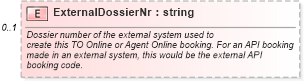

| Definition Type: | Element |
| Name: | ExternalDossierNr |
| Type: | string:http://www.w3.org/2001/XMLSchema |
| Containing Schema: | DossierItem.xsd |
| MinOccurs | 0 |
| MaxOccurs | (1) |
| Abstract | False |
| Documentation: | Dossier number of the external system used to create this TO Online or Agent Online booking. For an API booking made in an external system, this would be the external API booking code. |
|  |
|